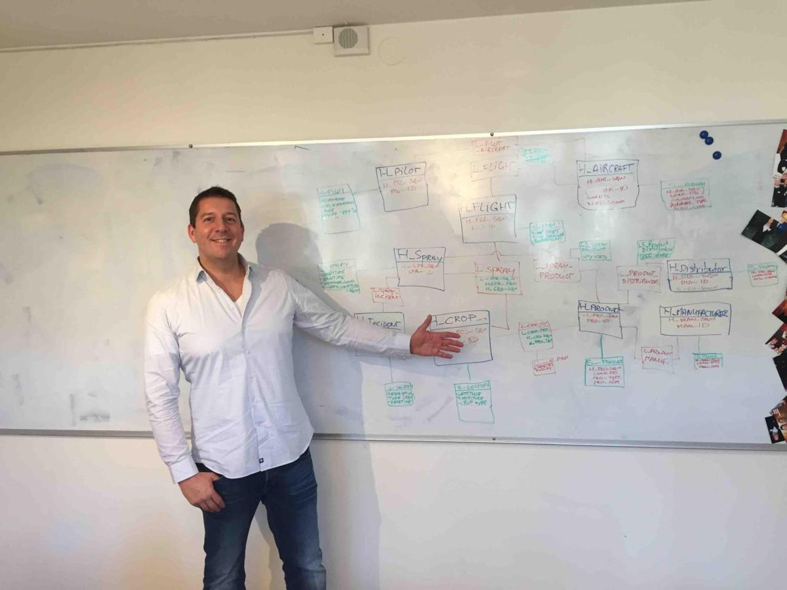
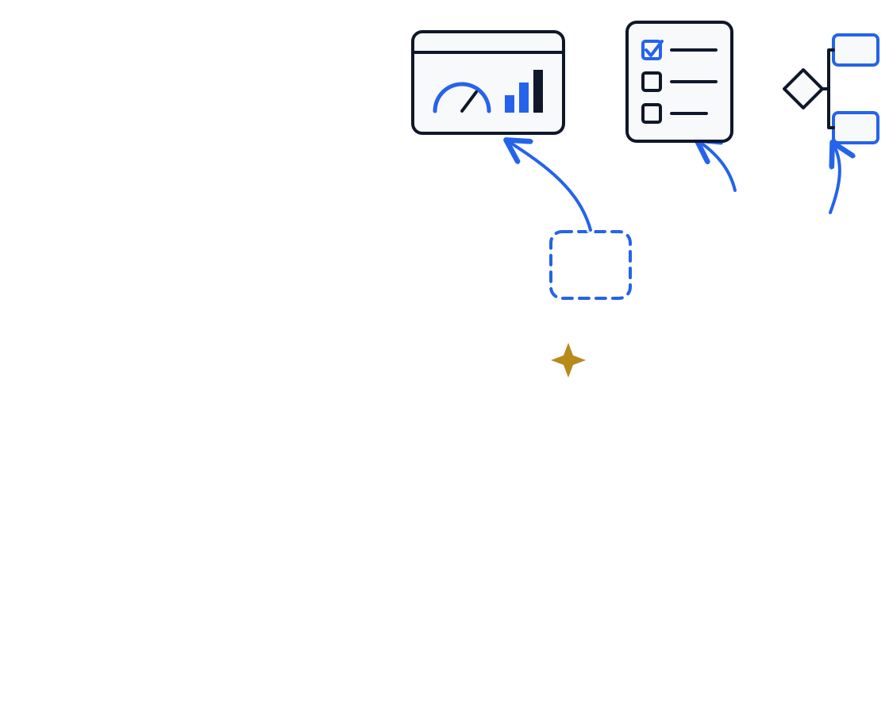
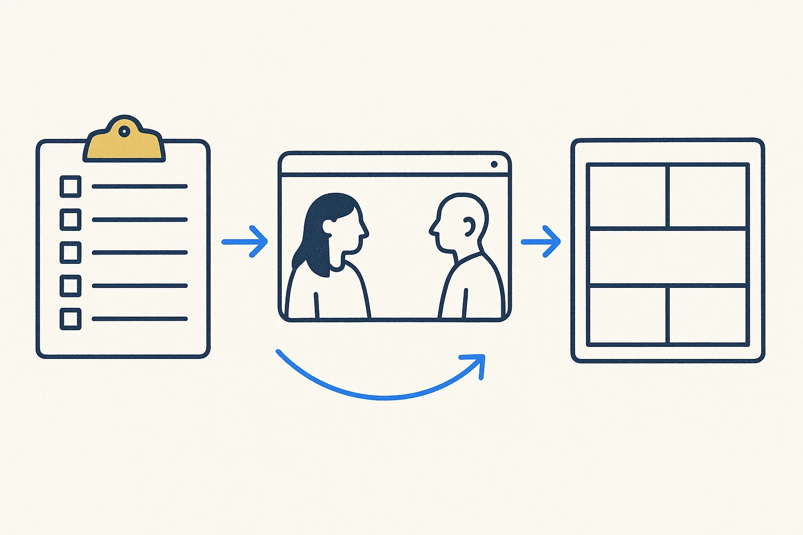
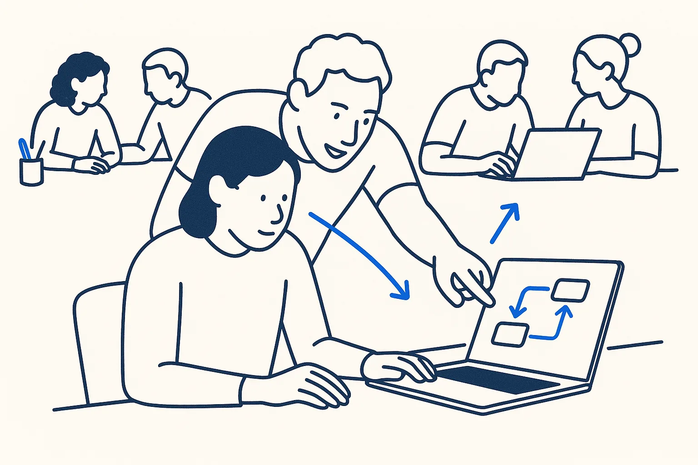
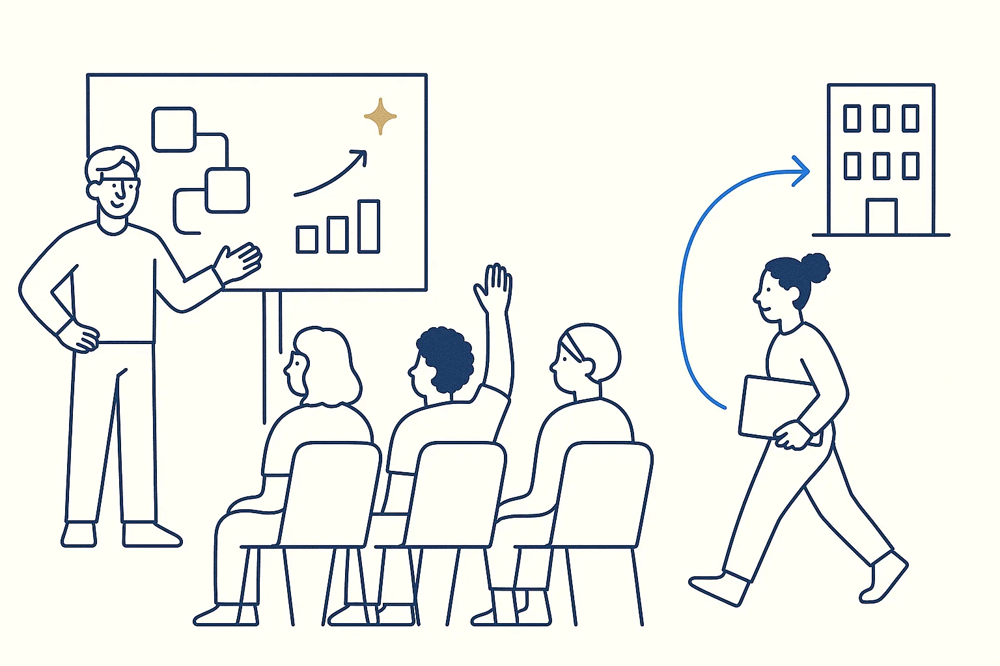
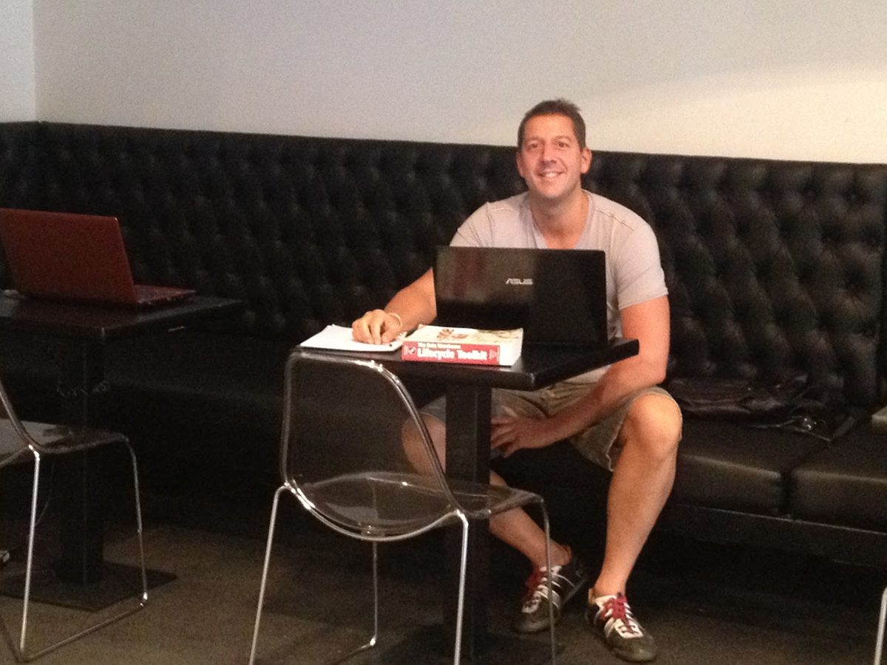

Build your own.
With structure.
You no longer need to be a developer to build an intelligent tool for your own business. AI writes the code. What decides whether the tool actually works is underneath it: clean data, clear rules, a sharp question. That part you learn at the table, in one day, on your own case.


Others teach you a tool. Here you build yours.
Courses that show you ChatGPT, Claude or Copilot are everywhere, and more and more of them are free. Knowing the tool is not the hard part any more. Making it work on your own messy reality is.
Your own case
No demo company, no shared exercise. You bring a problem from your own business, and that is what you build.
Data and rules first
Most AI tools fail on the data, not on the AI. We start with what your data looks like and which rules the tool must follow. That is where the result comes from.
Coached, not lectured
One short opening, one live example, then you build. I walk around, help you past the point where you get stuck, and keep my hands off your keyboard.
Prepared, so one day is enough
- A short questionnaireAbout ten minutes: your background, your use case, what it costs you now, what your data looks like, and what you expect from the day.
- A 20-minute callBy phone or Teams, one or two weeks before. We cut your case down to something you can build in a day and check which data you can bring.
- The Build DayA small group, one room, one day. You build, you demo, you improve.
- The return sessionTwo to three hours, three to four weeks later. What did you take further, and where are you stuck now?

From your problem to a working tool
| 09:30 | ArriveCoffee, laptops open, accounts checked in advance so nobody loses an hour to logins. |
| 10:00 | OpeningWhy structure beats magic, in thirty minutes. |
| 10:30 | A live buildOne example from start to finish, so you see the method once. |
| 11:15 | Your caseAlready scoped in the call. Two minutes each, then pairs sharpen it. |
| 12:00 | LunchThe part where you meet the others properly. |
| 12:45 | BuildTwo and a half hours. You build; I coach. |
| 15:15 | DemoReal tools, no slides. What it does, what is still missing. One strength and one next step for each of you. |
| 16:15 | Improve and take homeOne improvement from the feedback, and your own next three steps. |

Something that runs, and the structure under it
- A working tool on your own example data
- Its rules, written down — so you, a colleague or the AI can change it later without breaking it
- A one-page use case and data canvas: the problem, what it is worth, the state of your data, and the privacy points
- Your next three steps, written by you on the day
- The return session, and a small group of people who build too
Not every build finishes in one day. A prototype, a clear plan or a cleaned-up process are all good outcomes. The point is that you leave knowing how to continue.

What I built myself instead of buying
Accounting, email, CRM, documents and photos: the components a small company runs on. Each use case shows what it replaces, how it is built, the real numbers, and what went wrong on the way.
Use cases →
Nineteen components of my own business OS, built with AI and structure underneath.
Samples →
Small builds for one afternoon, each cut from a use case. Two are the live builds on a Build Day.
Articles →
Tiny experiments first, proof of concept versus product, and vibe coding practices that hold.
For people who want to build, not to be impressed
A good fit if you…
- run or innovate in a small or mid-sized company
- have one concrete problem that costs time, goes wrong, or lives in one person’s head
- can bring an example of the data involved
- are comfortable with a spreadsheet — no coding needed
Not the right day if you…
- are looking for a tool that solves everything by itself
- want an overview of the AI market
- cannot share any example of your data, not even anonymised
Privacy is part of the build
- No real personal data in the build. You bring anonymised or made-up example data. If that is hard, making a good example set is the first part of your build — and a skill worth having.
- Your accounts, your tools. You build in your own AI account, within your company’s own rules for AI.
- Nothing of your business data ends up with me. Your answers to the questionnaire are kept private and only used to prepare your day.
- Nothing is published without your permission. If I want to write about a case, I ask you first, and it is anonymous.
Host a Build Day for your members or your team
Innovation hubs, business associations, municipalities and coworking spaces: if your members are past the “what is AI” stage and need to get to a working result, a Build Day is the next step after an ideation session. The format also works in-company, for a team that wants to build on its own processes.
Also abroad. The day runs in English, so it travels. Build Days in other cities are planned with a local host who brings the room and the group.
From bank to builder
I am Jaco van der Laan. For more than 25 years I worked on data architecture and data modeling, most of it in large Dutch banks, where data has to be right and rules have to hold. Today I build my own tools on top of my own structured data, with AI doing much of the coding.
That combination is what a Build Day brings to your table: the discipline of a bank, at the scale of your company, and the speed AI now makes possible. I like nothing better than helping someone get from “I have an idea” to “look, it works”.
More of the thinking behind it: Structure Beats Magic · Breakthrough Modeling · LinkedIn · Photos

Practical
Do I need to be able to code?
No. If you can work with a spreadsheet, you can build on a Build Day. The AI writes the code; you decide what it must do and check that it does.
Which tools do we use?
Mainly Claude, in your own account. The call before the day tells us which level fits you, and you get a short checklist of what to set up in advance.
My data is a mess. Can I still join?
Yes — that is often the real problem, and a good place to start. Getting a small, clean example set right is a valid build in itself.
Where and in which language?
In a central location in the Netherlands (Utrecht or Rotterdam), in English. You are welcome to bring your own material in Dutch.
How many people, and what does it cost?
Four to eight people, so there is real time for each of you. The first Build Day is a pilot edition at a reduced price, in exchange for feedback and permission to describe the results anonymously. Prices follow when registration opens.
The first Build Day is being planned
A pilot group of four to six people, in the Netherlands, before the end of the year. Interested? Send me a message with one line about the problem you would like to build on. The questionnaire follows.